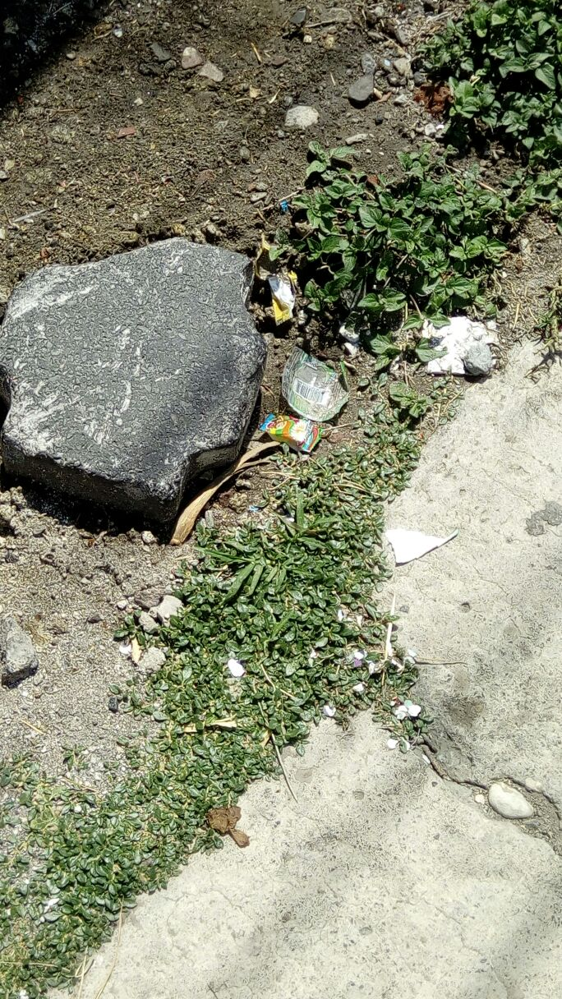

La Contaminacion en mi Ciudad
Comunidad
Centro de Atlixco

Ploblema
Te gusta ver esto todos los dias?

Centro de Atlixco
Te gusta ver esto todos los dias?
Infortunadamente los efectos y consecuencias de la contaminación ambiental no son pocos, pues además de provenir de una gran cantidad de fuentes ejercidas especialmente por el ser humano, los resultados se evidencian en las condiciones del clima, los animales y plantas y claramente, su causante principal; el hombre.
En países europeos, por ejemplo, cerca de 20.000 personas mueren cada año a causa de la contaminación ambiental. Esto se debe principalmente a la emisión de gases contaminantes tóxicos en el ambiente que causan irritación en los ojos y problemas en las vías respiratorias, además de fatigas, migradas y una serie de enfermedades cardiovasculares. ¿Cómo sucede esto? Pues bien, debido a la emisión, las partículas de humo y polvo que yacen en el aire, ingresan al cuerpo y se alojan en los pulmones, donde empiezan a producir daños graves.
La presencia de CO2 en la atmósfera provoca la emisión de concentraciones excesivas que aumentan las posibilidades de aparición del efecto invernadero. Además de las alteraciones que provoca en el clima con los fenómenos metereológicos, es también capaz de impedir la siembra en secciones del suelo donde residen agentes contaminados.
En el caso de las plantas, las consecuencias de la contaminación ambiental pueden reflejarse en el crecimiento y la imposibilidad de adaptación a las condiciones del ambiente, debido a los efectos negativos que produce la contaminación en el aire y el agua, agentes esenciales para sus procesos naturales. Este hecho ha permitido la desaparición de algunas plantas.
Reutiliza papeles, cartones, cajas, envases de vidrio, etc., para reducir la cantidad de residuos. Procura no pedir bolsas de plástico, sobre todo si lo que vas a llevar te alcanzan en las manos. Otra opción es llevar tus propias bolsas, si lo vas a hacer, de preferencia que sean bolsas de tela o biodegradables.
Afina y da mantenimiento a los automóviles
Es importante evitar combinaciones fuertes de colores en lugares cerrados como por ejemplo escuelas, instituciones, oficinas y demás.
No te desesperes y saca la basura de tu casa justo cuando pasa el camion ya que los perros rompen la bolsa y la dejan toda tirada.
Los amos responsables sacan a pasear a sus perros no solo para que se ejerciten sino para aprovechar que hagan sus necesidades, pero muchos no consideran que deben limpiar los desechos para evitar enfermedades y contaminación.
Ir a la página en internet relacionada al tema 12
12